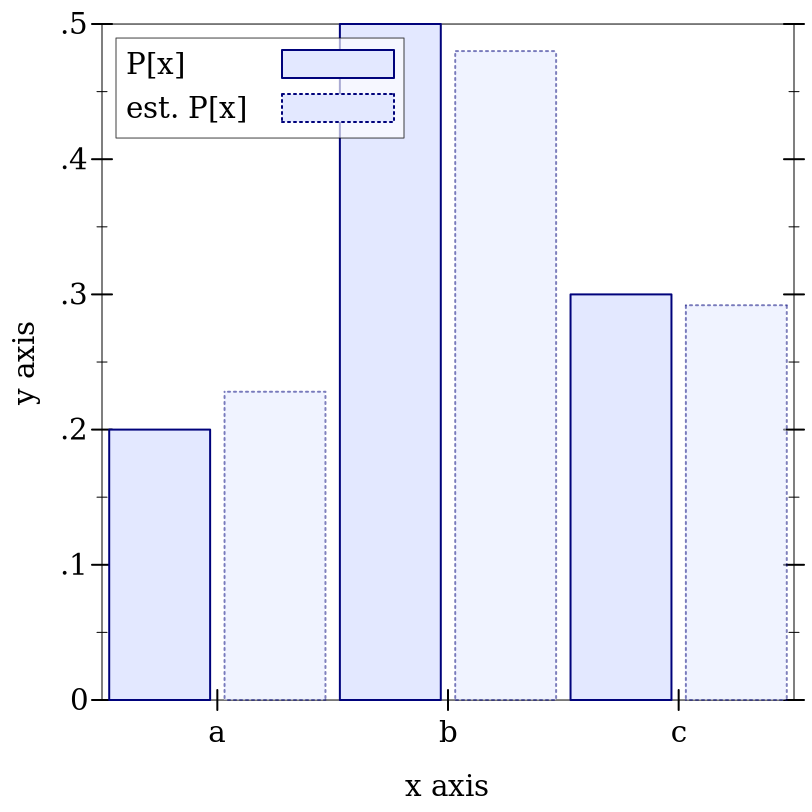

9.3 有限分布族
9.3.1 无序离散分布
syntax
(Discrete-Dist A)
procedure
(discrete-dist xs) → (Discrete-Dist A)
xs : (Sequenceof A) (discrete-dist xs ws) → (Discrete-Dist A) xs : (Sequenceof A) ws : (Sequenceof Real)
procedure
(discrete-dist-values d) → (Listof A)
d : (Discrete-Dist A)
procedure
(discrete-dist-probs d) → (Listof Positive-Flonum)
d : (Discrete-Dist A)
代表 A 类数值的无序、离散分布的族,其平等性由 equal? 决定。
ws 中的权重必须是非负的,并被视为非标准化的概率。 当 ws 没有给出时, xs 中的值被分配为统一概率。
类型 (Discrete-Dist A) 是 (dist A A) 的一个子类型。 这意味着离散分布对象是无序的,因此只有一个 pdf 和一个生成随机样本的程序。
但是请注意, discrete-dist-values 和 discrete-dist-probs 函数产生的列表可能是成对的; 也就是说,如果在一个给定的分布上调用 discrete-dist-values 的结果产生一个列表, 其第三个元素是 'a, 而在同一个分布上调用 discrete-dist-probs 的结果产生一个列表, 其第三个元素是 0.25,那么给定的分布将概率 0.25 与值 'a 相关联。
Examples:
> (define xs '(a b c)) > (define d (discrete-dist xs '(2 5 3))) > (define n 500) > (define h (samples->hash (sample d n)))
> (plot (list (discrete-histogram (map vector xs (map (distribution-pdf d) xs)) #:x-min 0 #:skip 2 #:label "P[x]") (discrete-histogram (map vector xs (map (λ (x) (/ (hash-ref h x) n)) xs)) #:x-min 1 #:skip 2 #:line-style 'dot #:alpha 0.5 #:label "est. P[x]"))) 